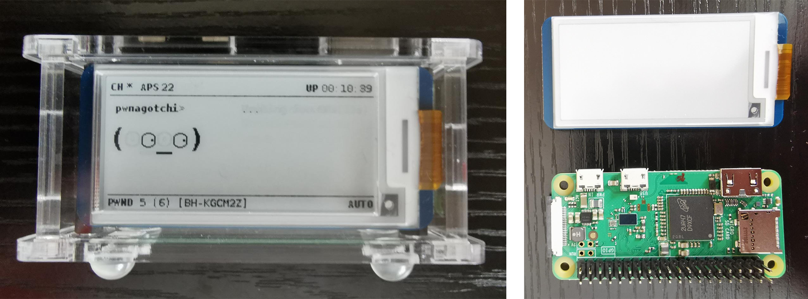

Pwnagotchi! - 29/06/2023
I’ve just finished assembling my Pwnagotchi! I’ll start by letting ChatGPT give you a brief description of what a Pwnagotchi is, and what it does. Then I’ll run through the components I used and how I set it up.
ChatGPT: Pwnagotchi is an AI project that uses a small device to analyse Wi-Fi networks and learn how to crack passwords. It evolves and improves its hacking techniques over time by observing network data packets. However, it's crucial to remember that using it for illegal or unethical purposes is against the law.
Components:
Raspberry Pi Zero WH
Waveshare 2.13” eInk Display
Pi Zero Case for Waveshare 2.13”
Micro-SD card
I began by downloading the PwnOS from GitHub, I then flashed it to the SD card using balenaEtcher. During the flashing process, I connected the eInk display to the General-Purpose Input/Output (GPIO) pins and assembled the case. Once the flashing was complete, I created a config.toml file in the boot directory of the SD card. This file allows customisation of various functions of the Pwnagotchi, including Wi-Fi scanning, network attacks, data collection, and display options. For now, my primary concern was the display property, I needed to set the Pwnagotchi’s output to my Waveshare eInk screen. After locating the ‘display’ property within the config.toml file, I changed it to 'waveshare_V3' and saved my changes. After saving the file, I ejected the SD card, inserted it into the Pi Zero, and plugged in the power supply.
I had read online that the first boot can take anywhere from 5-30 minutes. However, upon returning, I found that nothing had happened. The activity LED on the Pi was solid green, but the display remained blank. Seeking a solution, I turned to Pwnagotchi Subreddits and discovered that the Waveshare V3 had known compatibility issues with PwnOS. Fortunately, I found a patched version of the OS specifically for the V3 display and promptly downloaded and flashed it to the SD card. I also created a new config.toml file with suggested revised settings. After completing these steps, I plugged in the power supply again and, to my delight, the Pwnagotchi booted up successfully within about 5 minutes, with the eInk display functioning as it should.
I haven’t had time to test the Pwnagotchi or access the data it has collected on my Wi-Fi network just yet. Over the next few days, I’m going to do some research on how best to use my Pwnagotchi and how to setup a Secure Shell (SSH) to access the collected data. This was a fun project I’d been wanting to do for some time, which I would have got round to doing sooner had the Pi Zero WH been in stock!
Thanks for reading,
Jack
Pwnagotchi and Pi & eInk Display
